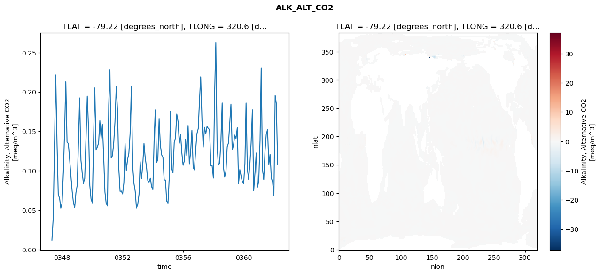
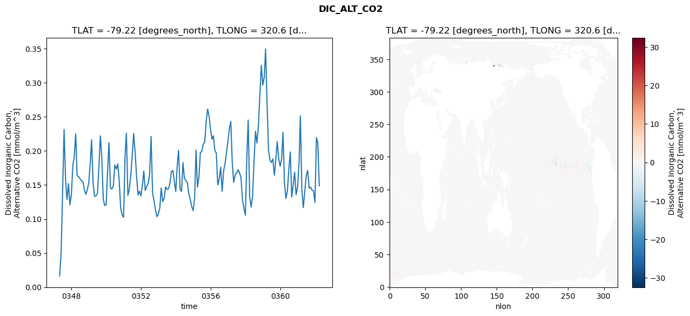
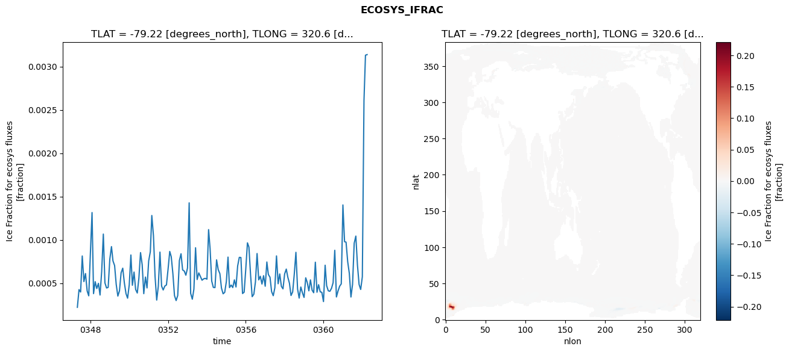
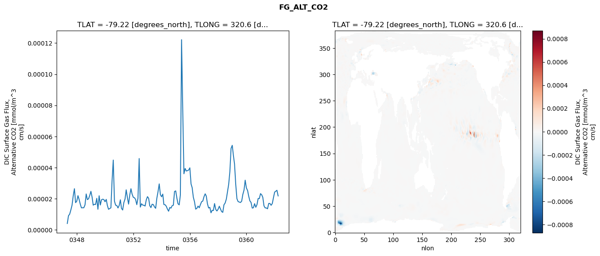

glb-dor_North_Atlantic_basin_037_1999-04-01_00149#
Simulation details#
Case: smyle.cdr-atlas-v0.glb-dor_North_Atlantic_basin_037_1999-04-01_00149.001
Basin: North_Atlantic_basin
Polygon: 37.0
Start date: 1999-04
Show code cell source Hide code cell source
import xarray as xr
import matplotlib.pyplot as plt
Show code cell source Hide code cell source
zarr_store = "/path/to/zarr/store"
# Parameters
zarr_store = "/global/cfs/projectdirs/m4746/Projects/Ocean-CDR-Atlas-v0/data/validation/smyle.cdr-atlas-v0.glb-dor_North_Atlantic_basin_037_1999-04-01_00149.001.validation.zarr"
Show code cell source Hide code cell source
%%time
ds_o = xr.open_zarr(zarr_store).compute()
ds_o
CPU times: user 644 ms, sys: 420 ms, total: 1.06 s
Wall time: 1.36 s
<xarray.Dataset> Size: 2MB
Dimensions: (nlat: 384, nlon: 320, time: 180)
Coordinates:
TLAT float64 8B -79.22
TLONG float64 8B 320.6
ULAT float64 8B -78.95
ULONG float64 8B 321.1
* time (time) object 1kB 0347-05-01 00:00:00 ... 0362-04-01 0...
z_t float32 4B 500.0
Dimensions without coordinates: nlat, nlon
Data variables:
ALK_ALT_CO2_diff (nlat, nlon) float32 492kB nan nan nan ... nan nan nan
ALK_ALT_CO2_rmse (time) float64 1kB 0.01202 0.03986 ... 0.185 0.1085
DIC_ALT_CO2_diff (nlat, nlon) float32 492kB nan nan nan ... nan nan nan
DIC_ALT_CO2_rmse (time) float64 1kB 0.01654 0.05298 ... 0.2122 0.1488
ECOSYS_IFRAC_diff (nlat, nlon) float32 492kB nan nan nan ... nan nan nan
ECOSYS_IFRAC_rmse (time) float64 1kB 0.000221 0.0004252 ... 0.003138
FG_ALT_CO2_diff (nlat, nlon) float32 492kB nan nan nan ... nan nan nan
FG_ALT_CO2_rmse (time) float64 1kB 4.024e-06 9.05e-06 ... 2.177e-05xarray.Dataset
- nlat: 384
- nlon: 320
- time: 180
- TLAT()float64-79.22
- long_name :
- array of t-grid latitudes
- units :
- degrees_north
array(-79.22052261)
- TLONG()float64320.6
- long_name :
- array of t-grid longitudes
- units :
- degrees_east
array(320.56250892)
- ULAT()float64-78.95
- long_name :
- array of u-grid latitudes
- units :
- degrees_north
array(-78.95289509)
- ULONG()float64321.1
- long_name :
- array of u-grid longitudes
- units :
- degrees_east
array(321.12500894)
- time(time)object0347-05-01 00:00:00 ... 0362-04-...
- bounds :
- time_bound
- long_name :
- time
array([cftime.DatetimeNoLeap(347, 5, 1, 0, 0, 0, 0, has_year_zero=True), cftime.DatetimeNoLeap(347, 6, 1, 0, 0, 0, 0, has_year_zero=True), cftime.DatetimeNoLeap(347, 7, 1, 0, 0, 0, 0, has_year_zero=True), cftime.DatetimeNoLeap(347, 8, 1, 0, 0, 0, 0, has_year_zero=True), cftime.DatetimeNoLeap(347, 9, 1, 0, 0, 0, 0, has_year_zero=True), cftime.DatetimeNoLeap(347, 10, 1, 0, 0, 0, 0, has_year_zero=True), cftime.DatetimeNoLeap(347, 11, 1, 0, 0, 0, 0, has_year_zero=True), cftime.DatetimeNoLeap(347, 12, 1, 0, 0, 0, 0, has_year_zero=True), cftime.DatetimeNoLeap(348, 1, 1, 0, 0, 0, 0, has_year_zero=True), cftime.DatetimeNoLeap(348, 2, 1, 0, 0, 0, 0, has_year_zero=True), cftime.DatetimeNoLeap(348, 3, 1, 0, 0, 0, 0, has_year_zero=True), cftime.DatetimeNoLeap(348, 4, 1, 0, 0, 0, 0, has_year_zero=True), cftime.DatetimeNoLeap(348, 5, 1, 0, 0, 0, 0, has_year_zero=True), cftime.DatetimeNoLeap(348, 6, 1, 0, 0, 0, 0, has_year_zero=True), cftime.DatetimeNoLeap(348, 7, 1, 0, 0, 0, 0, has_year_zero=True), cftime.DatetimeNoLeap(348, 8, 1, 0, 0, 0, 0, has_year_zero=True), cftime.DatetimeNoLeap(348, 9, 1, 0, 0, 0, 0, has_year_zero=True), cftime.DatetimeNoLeap(348, 10, 1, 0, 0, 0, 0, has_year_zero=True), cftime.DatetimeNoLeap(348, 11, 1, 0, 0, 0, 0, has_year_zero=True), cftime.DatetimeNoLeap(348, 12, 1, 0, 0, 0, 0, has_year_zero=True), cftime.DatetimeNoLeap(349, 1, 1, 0, 0, 0, 0, has_year_zero=True), cftime.DatetimeNoLeap(349, 2, 1, 0, 0, 0, 0, has_year_zero=True), cftime.DatetimeNoLeap(349, 3, 1, 0, 0, 0, 0, has_year_zero=True), cftime.DatetimeNoLeap(349, 4, 1, 0, 0, 0, 0, has_year_zero=True), cftime.DatetimeNoLeap(349, 5, 1, 0, 0, 0, 0, has_year_zero=True), cftime.DatetimeNoLeap(349, 6, 1, 0, 0, 0, 0, has_year_zero=True), cftime.DatetimeNoLeap(349, 7, 1, 0, 0, 0, 0, has_year_zero=True), cftime.DatetimeNoLeap(349, 8, 1, 0, 0, 0, 0, has_year_zero=True), cftime.DatetimeNoLeap(349, 9, 1, 0, 0, 0, 0, has_year_zero=True), cftime.DatetimeNoLeap(349, 10, 1, 0, 0, 0, 0, has_year_zero=True), cftime.DatetimeNoLeap(349, 11, 1, 0, 0, 0, 0, has_year_zero=True), cftime.DatetimeNoLeap(349, 12, 1, 0, 0, 0, 0, has_year_zero=True), cftime.DatetimeNoLeap(350, 1, 1, 0, 0, 0, 0, has_year_zero=True), cftime.DatetimeNoLeap(350, 2, 1, 0, 0, 0, 0, has_year_zero=True), cftime.DatetimeNoLeap(350, 3, 1, 0, 0, 0, 0, has_year_zero=True), cftime.DatetimeNoLeap(350, 4, 1, 0, 0, 0, 0, has_year_zero=True), cftime.DatetimeNoLeap(350, 5, 1, 0, 0, 0, 0, has_year_zero=True), cftime.DatetimeNoLeap(350, 6, 1, 0, 0, 0, 0, has_year_zero=True), cftime.DatetimeNoLeap(350, 7, 1, 0, 0, 0, 0, has_year_zero=True), cftime.DatetimeNoLeap(350, 8, 1, 0, 0, 0, 0, has_year_zero=True), cftime.DatetimeNoLeap(350, 9, 1, 0, 0, 0, 0, has_year_zero=True), cftime.DatetimeNoLeap(350, 10, 1, 0, 0, 0, 0, has_year_zero=True), cftime.DatetimeNoLeap(350, 11, 1, 0, 0, 0, 0, has_year_zero=True), cftime.DatetimeNoLeap(350, 12, 1, 0, 0, 0, 0, has_year_zero=True), cftime.DatetimeNoLeap(351, 1, 1, 0, 0, 0, 0, has_year_zero=True), cftime.DatetimeNoLeap(351, 2, 1, 0, 0, 0, 0, has_year_zero=True), cftime.DatetimeNoLeap(351, 3, 1, 0, 0, 0, 0, has_year_zero=True), cftime.DatetimeNoLeap(351, 4, 1, 0, 0, 0, 0, has_year_zero=True), cftime.DatetimeNoLeap(351, 5, 1, 0, 0, 0, 0, has_year_zero=True), cftime.DatetimeNoLeap(351, 6, 1, 0, 0, 0, 0, has_year_zero=True), cftime.DatetimeNoLeap(351, 7, 1, 0, 0, 0, 0, has_year_zero=True), cftime.DatetimeNoLeap(351, 8, 1, 0, 0, 0, 0, has_year_zero=True), cftime.DatetimeNoLeap(351, 9, 1, 0, 0, 0, 0, has_year_zero=True), cftime.DatetimeNoLeap(351, 10, 1, 0, 0, 0, 0, has_year_zero=True), cftime.DatetimeNoLeap(351, 11, 1, 0, 0, 0, 0, has_year_zero=True), cftime.DatetimeNoLeap(351, 12, 1, 0, 0, 0, 0, has_year_zero=True), cftime.DatetimeNoLeap(352, 1, 1, 0, 0, 0, 0, has_year_zero=True), cftime.DatetimeNoLeap(352, 2, 1, 0, 0, 0, 0, has_year_zero=True), cftime.DatetimeNoLeap(352, 3, 1, 0, 0, 0, 0, has_year_zero=True), cftime.DatetimeNoLeap(352, 4, 1, 0, 0, 0, 0, has_year_zero=True), cftime.DatetimeNoLeap(352, 5, 1, 0, 0, 0, 0, has_year_zero=True), cftime.DatetimeNoLeap(352, 6, 1, 0, 0, 0, 0, has_year_zero=True), cftime.DatetimeNoLeap(352, 7, 1, 0, 0, 0, 0, has_year_zero=True), cftime.DatetimeNoLeap(352, 8, 1, 0, 0, 0, 0, has_year_zero=True), cftime.DatetimeNoLeap(352, 9, 1, 0, 0, 0, 0, has_year_zero=True), cftime.DatetimeNoLeap(352, 10, 1, 0, 0, 0, 0, has_year_zero=True), cftime.DatetimeNoLeap(352, 11, 1, 0, 0, 0, 0, has_year_zero=True), cftime.DatetimeNoLeap(352, 12, 1, 0, 0, 0, 0, has_year_zero=True), cftime.DatetimeNoLeap(353, 1, 1, 0, 0, 0, 0, has_year_zero=True), cftime.DatetimeNoLeap(353, 2, 1, 0, 0, 0, 0, has_year_zero=True), cftime.DatetimeNoLeap(353, 3, 1, 0, 0, 0, 0, has_year_zero=True), cftime.DatetimeNoLeap(353, 4, 1, 0, 0, 0, 0, has_year_zero=True), cftime.DatetimeNoLeap(353, 5, 1, 0, 0, 0, 0, has_year_zero=True), cftime.DatetimeNoLeap(353, 6, 1, 0, 0, 0, 0, has_year_zero=True), cftime.DatetimeNoLeap(353, 7, 1, 0, 0, 0, 0, has_year_zero=True), cftime.DatetimeNoLeap(353, 8, 1, 0, 0, 0, 0, has_year_zero=True), cftime.DatetimeNoLeap(353, 9, 1, 0, 0, 0, 0, has_year_zero=True), cftime.DatetimeNoLeap(353, 10, 1, 0, 0, 0, 0, has_year_zero=True), cftime.DatetimeNoLeap(353, 11, 1, 0, 0, 0, 0, has_year_zero=True), cftime.DatetimeNoLeap(353, 12, 1, 0, 0, 0, 0, has_year_zero=True), cftime.DatetimeNoLeap(354, 1, 1, 0, 0, 0, 0, has_year_zero=True), cftime.DatetimeNoLeap(354, 2, 1, 0, 0, 0, 0, has_year_zero=True), cftime.DatetimeNoLeap(354, 3, 1, 0, 0, 0, 0, has_year_zero=True), cftime.DatetimeNoLeap(354, 4, 1, 0, 0, 0, 0, has_year_zero=True), cftime.DatetimeNoLeap(354, 5, 1, 0, 0, 0, 0, has_year_zero=True), cftime.DatetimeNoLeap(354, 6, 1, 0, 0, 0, 0, has_year_zero=True), cftime.DatetimeNoLeap(354, 7, 1, 0, 0, 0, 0, has_year_zero=True), cftime.DatetimeNoLeap(354, 8, 1, 0, 0, 0, 0, has_year_zero=True), cftime.DatetimeNoLeap(354, 9, 1, 0, 0, 0, 0, has_year_zero=True), cftime.DatetimeNoLeap(354, 10, 1, 0, 0, 0, 0, has_year_zero=True), cftime.DatetimeNoLeap(354, 11, 1, 0, 0, 0, 0, has_year_zero=True), cftime.DatetimeNoLeap(354, 12, 1, 0, 0, 0, 0, has_year_zero=True), cftime.DatetimeNoLeap(355, 1, 1, 0, 0, 0, 0, has_year_zero=True), cftime.DatetimeNoLeap(355, 2, 1, 0, 0, 0, 0, has_year_zero=True), cftime.DatetimeNoLeap(355, 3, 1, 0, 0, 0, 0, has_year_zero=True), cftime.DatetimeNoLeap(355, 4, 1, 0, 0, 0, 0, has_year_zero=True), cftime.DatetimeNoLeap(355, 5, 1, 0, 0, 0, 0, has_year_zero=True), cftime.DatetimeNoLeap(355, 6, 1, 0, 0, 0, 0, has_year_zero=True), cftime.DatetimeNoLeap(355, 7, 1, 0, 0, 0, 0, has_year_zero=True), cftime.DatetimeNoLeap(355, 8, 1, 0, 0, 0, 0, has_year_zero=True), cftime.DatetimeNoLeap(355, 9, 1, 0, 0, 0, 0, has_year_zero=True), cftime.DatetimeNoLeap(355, 10, 1, 0, 0, 0, 0, has_year_zero=True), cftime.DatetimeNoLeap(355, 11, 1, 0, 0, 0, 0, has_year_zero=True), cftime.DatetimeNoLeap(355, 12, 1, 0, 0, 0, 0, has_year_zero=True), cftime.DatetimeNoLeap(356, 1, 1, 0, 0, 0, 0, has_year_zero=True), cftime.DatetimeNoLeap(356, 2, 1, 0, 0, 0, 0, has_year_zero=True), cftime.DatetimeNoLeap(356, 3, 1, 0, 0, 0, 0, has_year_zero=True), cftime.DatetimeNoLeap(356, 4, 1, 0, 0, 0, 0, has_year_zero=True), cftime.DatetimeNoLeap(356, 5, 1, 0, 0, 0, 0, has_year_zero=True), cftime.DatetimeNoLeap(356, 6, 1, 0, 0, 0, 0, has_year_zero=True), cftime.DatetimeNoLeap(356, 7, 1, 0, 0, 0, 0, has_year_zero=True), cftime.DatetimeNoLeap(356, 8, 1, 0, 0, 0, 0, has_year_zero=True), cftime.DatetimeNoLeap(356, 9, 1, 0, 0, 0, 0, has_year_zero=True), cftime.DatetimeNoLeap(356, 10, 1, 0, 0, 0, 0, has_year_zero=True), cftime.DatetimeNoLeap(356, 11, 1, 0, 0, 0, 0, has_year_zero=True), cftime.DatetimeNoLeap(356, 12, 1, 0, 0, 0, 0, has_year_zero=True), cftime.DatetimeNoLeap(357, 1, 1, 0, 0, 0, 0, has_year_zero=True), cftime.DatetimeNoLeap(357, 2, 1, 0, 0, 0, 0, has_year_zero=True), cftime.DatetimeNoLeap(357, 3, 1, 0, 0, 0, 0, has_year_zero=True), cftime.DatetimeNoLeap(357, 4, 1, 0, 0, 0, 0, has_year_zero=True), cftime.DatetimeNoLeap(357, 5, 1, 0, 0, 0, 0, has_year_zero=True), cftime.DatetimeNoLeap(357, 6, 1, 0, 0, 0, 0, has_year_zero=True), cftime.DatetimeNoLeap(357, 7, 1, 0, 0, 0, 0, has_year_zero=True), cftime.DatetimeNoLeap(357, 8, 1, 0, 0, 0, 0, has_year_zero=True), cftime.DatetimeNoLeap(357, 9, 1, 0, 0, 0, 0, has_year_zero=True), cftime.DatetimeNoLeap(357, 10, 1, 0, 0, 0, 0, has_year_zero=True), cftime.DatetimeNoLeap(357, 11, 1, 0, 0, 0, 0, has_year_zero=True), cftime.DatetimeNoLeap(357, 12, 1, 0, 0, 0, 0, has_year_zero=True), cftime.DatetimeNoLeap(358, 1, 1, 0, 0, 0, 0, has_year_zero=True), cftime.DatetimeNoLeap(358, 2, 1, 0, 0, 0, 0, has_year_zero=True), cftime.DatetimeNoLeap(358, 3, 1, 0, 0, 0, 0, has_year_zero=True), cftime.DatetimeNoLeap(358, 4, 1, 0, 0, 0, 0, has_year_zero=True), cftime.DatetimeNoLeap(358, 5, 1, 0, 0, 0, 0, has_year_zero=True), cftime.DatetimeNoLeap(358, 6, 1, 0, 0, 0, 0, has_year_zero=True), cftime.DatetimeNoLeap(358, 7, 1, 0, 0, 0, 0, has_year_zero=True), cftime.DatetimeNoLeap(358, 8, 1, 0, 0, 0, 0, has_year_zero=True), cftime.DatetimeNoLeap(358, 9, 1, 0, 0, 0, 0, has_year_zero=True), cftime.DatetimeNoLeap(358, 10, 1, 0, 0, 0, 0, has_year_zero=True), cftime.DatetimeNoLeap(358, 11, 1, 0, 0, 0, 0, has_year_zero=True), cftime.DatetimeNoLeap(358, 12, 1, 0, 0, 0, 0, has_year_zero=True), cftime.DatetimeNoLeap(359, 1, 1, 0, 0, 0, 0, has_year_zero=True), cftime.DatetimeNoLeap(359, 2, 1, 0, 0, 0, 0, has_year_zero=True), cftime.DatetimeNoLeap(359, 3, 1, 0, 0, 0, 0, has_year_zero=True), cftime.DatetimeNoLeap(359, 4, 1, 0, 0, 0, 0, has_year_zero=True), cftime.DatetimeNoLeap(359, 5, 1, 0, 0, 0, 0, has_year_zero=True), cftime.DatetimeNoLeap(359, 6, 1, 0, 0, 0, 0, has_year_zero=True), cftime.DatetimeNoLeap(359, 7, 1, 0, 0, 0, 0, has_year_zero=True), cftime.DatetimeNoLeap(359, 8, 1, 0, 0, 0, 0, has_year_zero=True), cftime.DatetimeNoLeap(359, 9, 1, 0, 0, 0, 0, has_year_zero=True), cftime.DatetimeNoLeap(359, 10, 1, 0, 0, 0, 0, has_year_zero=True), cftime.DatetimeNoLeap(359, 11, 1, 0, 0, 0, 0, has_year_zero=True), cftime.DatetimeNoLeap(359, 12, 1, 0, 0, 0, 0, has_year_zero=True), cftime.DatetimeNoLeap(360, 1, 1, 0, 0, 0, 0, has_year_zero=True), cftime.DatetimeNoLeap(360, 2, 1, 0, 0, 0, 0, has_year_zero=True), cftime.DatetimeNoLeap(360, 3, 1, 0, 0, 0, 0, has_year_zero=True), cftime.DatetimeNoLeap(360, 4, 1, 0, 0, 0, 0, has_year_zero=True), cftime.DatetimeNoLeap(360, 5, 1, 0, 0, 0, 0, has_year_zero=True), cftime.DatetimeNoLeap(360, 6, 1, 0, 0, 0, 0, has_year_zero=True), cftime.DatetimeNoLeap(360, 7, 1, 0, 0, 0, 0, has_year_zero=True), cftime.DatetimeNoLeap(360, 8, 1, 0, 0, 0, 0, has_year_zero=True), cftime.DatetimeNoLeap(360, 9, 1, 0, 0, 0, 0, has_year_zero=True), cftime.DatetimeNoLeap(360, 10, 1, 0, 0, 0, 0, has_year_zero=True), cftime.DatetimeNoLeap(360, 11, 1, 0, 0, 0, 0, has_year_zero=True), cftime.DatetimeNoLeap(360, 12, 1, 0, 0, 0, 0, has_year_zero=True), cftime.DatetimeNoLeap(361, 1, 1, 0, 0, 0, 0, has_year_zero=True), cftime.DatetimeNoLeap(361, 2, 1, 0, 0, 0, 0, has_year_zero=True), cftime.DatetimeNoLeap(361, 3, 1, 0, 0, 0, 0, has_year_zero=True), cftime.DatetimeNoLeap(361, 4, 1, 0, 0, 0, 0, has_year_zero=True), cftime.DatetimeNoLeap(361, 5, 1, 0, 0, 0, 0, has_year_zero=True), cftime.DatetimeNoLeap(361, 6, 1, 0, 0, 0, 0, has_year_zero=True), cftime.DatetimeNoLeap(361, 7, 1, 0, 0, 0, 0, has_year_zero=True), cftime.DatetimeNoLeap(361, 8, 1, 0, 0, 0, 0, has_year_zero=True), cftime.DatetimeNoLeap(361, 9, 1, 0, 0, 0, 0, has_year_zero=True), cftime.DatetimeNoLeap(361, 10, 1, 0, 0, 0, 0, has_year_zero=True), cftime.DatetimeNoLeap(361, 11, 1, 0, 0, 0, 0, has_year_zero=True), cftime.DatetimeNoLeap(361, 12, 1, 0, 0, 0, 0, has_year_zero=True), cftime.DatetimeNoLeap(362, 1, 1, 0, 0, 0, 0, has_year_zero=True), cftime.DatetimeNoLeap(362, 2, 1, 0, 0, 0, 0, has_year_zero=True), cftime.DatetimeNoLeap(362, 3, 1, 0, 0, 0, 0, has_year_zero=True), cftime.DatetimeNoLeap(362, 4, 1, 0, 0, 0, 0, has_year_zero=True)], dtype=object) - z_t()float32500.0
- long_name :
- depth from surface to midpoint of layer
- positive :
- down
- units :
- centimeters
- valid_max :
- 537500.0
- valid_min :
- 500.0
array(500., dtype=float32)
- ALK_ALT_CO2_diff(nlat, nlon)float32nan nan nan nan ... nan nan nan nan
- cell_methods :
- time: mean
- grid_loc :
- 3111
- long_name :
- Alkalinity, Alternative CO2
- units :
- meq/m^3
array([[ nan, nan, nan, ..., nan, nan, nan], [ nan, nan, nan, ..., nan, nan, nan], [ 0.0246582 , 0.00292969, -0.0012207 , ..., nan, nan, nan], ..., [ nan, nan, nan, ..., nan, nan, nan], [ nan, nan, nan, ..., nan, nan, nan], [ nan, nan, nan, ..., nan, nan, nan]], dtype=float32) - ALK_ALT_CO2_rmse(time)float640.01202 0.03986 ... 0.185 0.1085
- cell_methods :
- time: mean
- grid_loc :
- 3111
- long_name :
- Alkalinity, Alternative CO2
- units :
- meq/m^3
array([0.01202459, 0.03986409, 0.12916011, 0.22158077, 0.13510873, 0.06936379, 0.06547917, 0.05249289, 0.05887184, 0.09767445, 0.14630347, 0.21300624, 0.13609918, 0.13451666, 0.11554883, 0.09437155, 0.07421316, 0.05981677, 0.05319431, 0.0720708 , 0.081663 , 0.13773103, 0.19225368, 0.11347436, 0.09755298, 0.08395691, 0.09038236, 0.14053039, 0.19461945, 0.15454203, 0.08143297, 0.06388768, 0.05920098, 0.1417546 , 0.20503989, 0.12616968, 0.13020976, 0.13496566, 0.16362767, 0.14108842, 0.15873134, 0.11891567, 0.07301397, 0.05862838, 0.05524775, 0.18307206, 0.22832422, 0.11611085, 0.11919127, 0.13541804, 0.16212652, 0.20642796, 0.17665763, 0.10344454, 0.07388173, 0.07429323, 0.07058985, 0.08498712, 0.13457404, 0.10037312, 0.11433865, 0.12211927, 0.14679347, 0.20749517, 0.10658914, 0.08433315, 0.07414779, 0.05270375, 0.05692873, 0.07000933, 0.11149041, 0.09003258, 0.10663678, 0.1345309 , 0.11646037, 0.10442316, 0.08762124, 0.08518968, 0.09075117, 0.07995891, 0.07610647, 0.13988584, 0.17746189, 0.11061093, 0.11406264, 0.16577793, 0.1326738 , 0.12021349, 0.11702047, 0.08847942, 0.08832028, 0.06147468, 0.05888951, 0.09162145, 0.17519012, 0.10266341, 0.09751075, 0.13587257, 0.14164377, 0.17209151, 0.16256443, 0.13484069, 0.14627231, 0.12300947, 0.10687138, 0.11280608, 0.13977833, 0.11899594, 0.1574108 , 0.10876239, 0.12370989, 0.15128582, 0.10391609, 0.10103932, 0.12726388, 0.14714941, 0.15351528, 0.19003644, 0.2192983 , 0.16394686, 0.13010051, 0.1551139 , 0.14686321, 0.15613403, 0.15365642, 0.15228473, 0.10667873, 0.10659354, 0.09094673, 0.19962538, 0.26255336, 0.13182174, 0.10717678, 0.10972642, 0.1366588 , 0.18597043, 0.10430006, 0.09215342, 0.09950376, 0.13049745, 0.13520439, 0.16115237, 0.18443193, 0.12649523, 0.13236004, 0.14524068, 0.14082541, 0.15464004, 0.08394737, 0.10136645, 0.09297988, 0.08636497, 0.08346351, 0.10907978, 0.18588779, 0.10255818, 0.08911834, 0.10829156, 0.13525429, 0.17760051, 0.07481131, 0.09656434, 0.12257849, 0.07930583, 0.0867793 , 0.13860729, 0.23048982, 0.10182599, 0.08890884, 0.12500793, 0.14634549, 0.15225541, 0.10804437, 0.12080411, 0.0907738 , 0.08560301, 0.06884663, 0.19548654, 0.18500669, 0.10854115]) - DIC_ALT_CO2_diff(nlat, nlon)float32nan nan nan nan ... nan nan nan nan
- cell_methods :
- time: mean
- grid_loc :
- 3111
- long_name :
- Dissolved Inorganic Carbon, Alternative CO2
- units :
- mmol/m^3
array([[ nan, nan, nan, ..., nan, nan, nan], [ nan, nan, nan, ..., nan, nan, nan], [-0.0012207 , -0.00878906, -0.00048828, ..., nan, nan, nan], ..., [ nan, nan, nan, ..., nan, nan, nan], [ nan, nan, nan, ..., nan, nan, nan], [ nan, nan, nan, ..., nan, nan, nan]], dtype=float32) - DIC_ALT_CO2_rmse(time)float640.01654 0.05298 ... 0.2122 0.1488
- cell_methods :
- time: mean
- grid_loc :
- 3111
- long_name :
- Dissolved Inorganic Carbon, Alternative CO2
- units :
- mmol/m^3
array([0.01653744, 0.05297874, 0.1399041 , 0.23160218, 0.15742675, 0.12861013, 0.15200073, 0.12082432, 0.13592915, 0.17920808, 0.19071112, 0.22497575, 0.16404575, 0.16221791, 0.1592901 , 0.15636758, 0.15460075, 0.14327767, 0.13617593, 0.14301542, 0.15362008, 0.18283775, 0.21629125, 0.15441826, 0.13358732, 0.13405079, 0.13708473, 0.17590011, 0.22229796, 0.19038993, 0.12898603, 0.1199313 , 0.12070534, 0.17267977, 0.21241484, 0.14559517, 0.14424543, 0.14886332, 0.17946824, 0.1734586 , 0.18100586, 0.15597097, 0.11554826, 0.10610488, 0.10270695, 0.1926412 , 0.22605497, 0.13477499, 0.14409795, 0.1646559 , 0.19224336, 0.22569094, 0.19685559, 0.1618084 , 0.1353378 , 0.14104625, 0.13396911, 0.15059023, 0.1703981 , 0.1418496 , 0.14808001, 0.15208447, 0.16583381, 0.22123297, 0.13844683, 0.12719248, 0.11352261, 0.10345468, 0.10728281, 0.11668374, 0.14554222, 0.12571864, 0.12990902, 0.14730526, 0.1434341 , 0.14444161, 0.15246903, 0.16948747, 0.17141416, 0.15582453, 0.140404 , 0.17921218, 0.20090079, 0.14355954, 0.14064729, 0.18304181, 0.15939901, 0.15667312, 0.15368652, 0.13669256, 0.12909722, 0.11809185, 0.11247608, 0.13216958, 0.20128541, 0.14690924, 0.16144719, 0.19769199, 0.19920316, 0.21005646, 0.21313402, 0.24349966, 0.26153794, 0.25123918, 0.2309208 , 0.21716597, 0.22224992, 0.20065924, 0.19690388, 0.15003912, 0.15853683, 0.17611891, 0.14063957, 0.1703701 , 0.18159504, 0.19803641, 0.21459058, 0.23325046, 0.2433763 , 0.18283303, 0.15376702, 0.16506094, 0.16715877, 0.1724206 , 0.16767619, 0.1607887 , 0.12857437, 0.11612229, 0.1056927 , 0.19236112, 0.24550019, 0.1329715 , 0.11768376, 0.13308488, 0.18476581, 0.22887842, 0.21165954, 0.23694905, 0.28228801, 0.32576545, 0.29671249, 0.30817518, 0.34974495, 0.27005345, 0.20143873, 0.18647222, 0.18302359, 0.18837633, 0.16432696, 0.18682249, 0.21375782, 0.18865706, 0.17748937, 0.18896526, 0.22759148, 0.1532633 , 0.130246 , 0.14083465, 0.17230789, 0.19862832, 0.13227169, 0.14955755, 0.16890505, 0.13580484, 0.14646064, 0.1823779 , 0.25165092, 0.14262935, 0.11696852, 0.14020274, 0.16357409, 0.17135373, 0.14544088, 0.14682755, 0.14226065, 0.14170017, 0.12431969, 0.21962091, 0.21220157, 0.14878821]) - ECOSYS_IFRAC_diff(nlat, nlon)float32nan nan nan nan ... nan nan nan nan
- cell_methods :
- time: mean
- grid_loc :
- 2110
- long_name :
- Ice Fraction for ecosys fluxes
- units :
- fraction
array([[ nan, nan, nan, ..., nan, nan, nan], [ nan, nan, nan, ..., nan, nan, nan], [-0.00078493, -0.00223482, -0.00179809, ..., nan, nan, nan], ..., [ nan, nan, nan, ..., nan, nan, nan], [ nan, nan, nan, ..., nan, nan, nan], [ nan, nan, nan, ..., nan, nan, nan]], dtype=float32) - ECOSYS_IFRAC_rmse(time)float640.000221 0.0004252 ... 0.003138
- cell_methods :
- time: mean
- grid_loc :
- 2110
- long_name :
- Ice Fraction for ecosys fluxes
- units :
- fraction
array([0.00022097, 0.00042516, 0.0003975 , 0.0008134 , 0.00051781, 0.00061046, 0.00040991, 0.00035349, 0.00084972, 0.00131443, 0.00037903, 0.00051696, 0.00043777, 0.00049757, 0.0003627 , 0.00063357, 0.00106608, 0.00050322, 0.00044368, 0.00045131, 0.00077768, 0.00092143, 0.00075683, 0.00070262, 0.00048559, 0.00035066, 0.00041017, 0.00061907, 0.00067261, 0.00050338, 0.00037926, 0.00032623, 0.00048075, 0.00082489, 0.00047533, 0.00062767, 0.00042665, 0.00038606, 0.00055669, 0.00085225, 0.0007131 , 0.00037854, 0.00057021, 0.00044453, 0.00075548, 0.00086269, 0.00128063, 0.00104807, 0.00057741, 0.00030425, 0.00046327, 0.0008582 , 0.00046549, 0.00042121, 0.00046654, 0.00047883, 0.0006641 , 0.00086572, 0.0008053 , 0.00061011, 0.00035667, 0.00029876, 0.0003569 , 0.00075988, 0.00083867, 0.00065252, 0.00063933, 0.00059143, 0.00067482, 0.00142667, 0.00038234, 0.00031465, 0.00043085, 0.00090836, 0.00054167, 0.00061816, 0.00057591, 0.00053357, 0.00054961, 0.00055515, 0.00054569, 0.00111763, 0.00089778, 0.0005228 , 0.00045064, 0.0004483 , 0.00076844, 0.00065523, 0.00060942, 0.0004426 , 0.000377 , 0.00039344, 0.00051913, 0.00080036, 0.00044847, 0.00047775, 0.00044894, 0.00053774, 0.00045565, 0.00069781, 0.00079736, 0.00079563, 0.00038014, 0.0003952 , 0.00066557, 0.00096514, 0.00091558, 0.00059131, 0.00034372, 0.00037181, 0.00051288, 0.00084172, 0.00053746, 0.00057938, 0.00048942, 0.00058609, 0.00046425, 0.00074391, 0.00059955, 0.00056808, 0.00040218, 0.00035481, 0.0004464 , 0.00081406, 0.00049292, 0.00060611, 0.00046291, 0.00043385, 0.00060658, 0.00066197, 0.00057055, 0.00049931, 0.0003572 , 0.00039887, 0.00060286, 0.00085558, 0.00043322, 0.00032752, 0.00045529, 0.00038928, 0.00033488, 0.00056148, 0.00050974, 0.00041115, 0.00053715, 0.00041893, 0.00038911, 0.00074154, 0.00039485, 0.00048183, 0.00039957, 0.00039436, 0.000287 , 0.00070671, 0.00047099, 0.00041149, 0.00040574, 0.00044023, 0.00050546, 0.00087896, 0.00034043, 0.00040893, 0.00046466, 0.00049129, 0.00140241, 0.00097844, 0.00097302, 0.00074687, 0.00061474, 0.00033979, 0.00048433, 0.00096073, 0.00104281, 0.0007102 , 0.00048456, 0.00042697, 0.00057351, 0.00260875, 0.00313038, 0.00313767]) - FG_ALT_CO2_diff(nlat, nlon)float32nan nan nan nan ... nan nan nan nan
- cell_methods :
- time: mean
- grid_loc :
- 2110
- long_name :
- DIC Surface Gas Flux, Alternative CO2
- units :
- mmol/m^3 cm/s
array([[ nan, nan, nan, ..., nan, nan, nan], [ nan, nan, nan, ..., nan, nan, nan], [5.334732e-06, 7.905444e-06, 8.423958e-06, ..., nan, nan, nan], ..., [ nan, nan, nan, ..., nan, nan, nan], [ nan, nan, nan, ..., nan, nan, nan], [ nan, nan, nan, ..., nan, nan, nan]], dtype=float32) - FG_ALT_CO2_rmse(time)float644.024e-06 9.05e-06 ... 2.177e-05
- cell_methods :
- time: mean
- grid_loc :
- 2110
- long_name :
- DIC Surface Gas Flux, Alternative CO2
- units :
- mmol/m^3 cm/s
array([4.02373855e-06, 9.05025922e-06, 1.00011325e-05, 1.27421803e-05, 1.58547319e-05, 2.18228853e-05, 2.64013451e-05, 1.74225656e-05, 1.83931082e-05, 2.19204193e-05, 1.95845908e-05, 1.64934585e-05, 1.40903467e-05, 1.41454149e-05, 1.41386807e-05, 1.59428645e-05, 2.30137238e-05, 1.93843986e-05, 1.99048933e-05, 2.20135714e-05, 2.47182162e-05, 2.08764403e-05, 1.58153460e-05, 1.63930550e-05, 1.62260836e-05, 2.01930191e-05, 1.31861568e-05, 2.18494730e-05, 1.58963374e-05, 1.92756876e-05, 1.96418577e-05, 1.94148603e-05, 1.80227267e-05, 1.95184062e-05, 1.56965002e-05, 1.31505740e-05, 1.36206086e-05, 1.41243845e-05, 3.14280306e-05, 4.48052014e-05, 1.83857298e-05, 1.58085044e-05, 1.55693172e-05, 1.40094503e-05, 1.55981919e-05, 1.92606144e-05, 1.37693380e-05, 1.26936633e-05, 1.74314800e-05, 1.97577418e-05, 2.56729564e-05, 2.07050292e-05, 1.64810248e-05, 2.23070969e-05, 2.63901759e-05, 2.28846062e-05, 2.08449640e-05, 2.05502904e-05, 1.94623672e-05, 1.61366557e-05, 2.02611831e-05, 4.57873436e-05, 1.45692168e-05, 1.67098286e-05, 1.58678852e-05, 1.57415020e-05, 1.52479653e-05, 1.91418707e-05, 2.12867224e-05, 2.02223274e-05, 1.54953918e-05, 1.42358255e-05, 1.64103827e-05, 1.62019826e-05, 1.47138958e-05, 1.37929077e-05, 2.03536042e-05, 2.44879966e-05, 2.94870000e-05, 2.25971412e-05, ... 3.94233038e-05, 3.77654018e-05, 3.80054043e-05, 3.83879068e-05, 3.98183580e-05, 2.94211118e-05, 2.71390186e-05, 2.08949570e-05, 1.80170306e-05, 1.32642408e-05, 1.37807130e-05, 1.52084117e-05, 1.41445413e-05, 1.61929703e-05, 1.80622002e-05, 1.84148042e-05, 2.12462727e-05, 2.30891508e-05, 2.16631364e-05, 1.66211568e-05, 1.39763369e-05, 1.43922795e-05, 1.08975405e-05, 1.25195227e-05, 1.23781151e-05, 1.68531067e-05, 1.30452785e-05, 1.20817393e-05, 1.31951818e-05, 1.51350249e-05, 1.34478189e-05, 1.17058793e-05, 1.11853657e-05, 1.60705263e-05, 1.71729209e-05, 1.97143196e-05, 2.45106175e-05, 2.92613506e-05, 3.75539525e-05, 5.23030425e-05, 5.42833312e-05, 4.74764414e-05, 4.22380467e-05, 2.91478240e-05, 2.00319638e-05, 1.81032172e-05, 1.78103428e-05, 1.75283134e-05, 1.83412811e-05, 2.26735913e-05, 2.55140354e-05, 3.18671636e-05, 2.68490435e-05, 2.52360799e-05, 2.16616280e-05, 1.85739441e-05, 1.75648476e-05, 1.39254637e-05, 1.41503748e-05, 1.67896150e-05, 1.44510131e-05, 1.61068051e-05, 2.01088525e-05, 2.00286763e-05, 2.32296293e-05, 2.24429537e-05, 2.08304759e-05, 1.53130827e-05, 1.40524473e-05, 1.40151633e-05, 1.34762232e-05, 1.69307826e-05, 1.69060064e-05, 1.57321402e-05, 1.68588464e-05, 2.06107425e-05, 2.42195693e-05, 2.48002919e-05, 2.53796566e-05, 2.17663811e-05])
- timePandasIndex
PandasIndex(CFTimeIndex([0347-05-01 00:00:00, 0347-06-01 00:00:00, 0347-07-01 00:00:00, 0347-08-01 00:00:00, 0347-09-01 00:00:00, 0347-10-01 00:00:00, 0347-11-01 00:00:00, 0347-12-01 00:00:00, 0348-01-01 00:00:00, 0348-02-01 00:00:00, ... 0361-07-01 00:00:00, 0361-08-01 00:00:00, 0361-09-01 00:00:00, 0361-10-01 00:00:00, 0361-11-01 00:00:00, 0361-12-01 00:00:00, 0362-01-01 00:00:00, 0362-02-01 00:00:00, 0362-03-01 00:00:00, 0362-04-01 00:00:00], dtype='object', length=180, calendar='noleap', freq='MS'))
Show code cell source Hide code cell source
variables = [v[:-5] for v in ds_o.variables if "_rmse" in v]
Show code cell source Hide code cell source
plt.rcParams.update({'figure.max_open_warning': 0})
for v in variables:
fig, axs = plt.subplots(1, 2, figsize=(15, 6))
ds_o[f"{v}_rmse"].plot(ax=axs[0])
ds_o[f"{v}_diff"].plot(ax=axs[1])
plt.suptitle(v, fontweight="bold")



